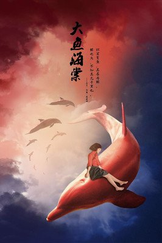
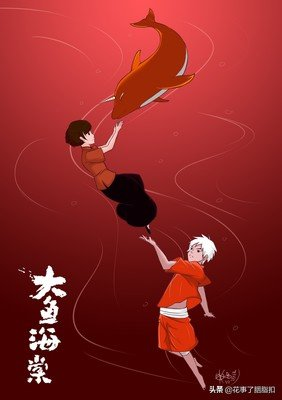

大鱼海棠
经典人物
椿
湫
鲲
经典台词
世界上每一个活着的人类，都是海底一条巨大的鱼，人的一生就像横跨大海。
Every living human heing in the world is a huge fish at the bottom of the sea.One's life is like crossing the sea.
每条大鱼都会相遇，每一个人都会重逢。
Every big fish will meet,and everyone will meet again.
故事简介
所有活着的人类，都是海里一条巨大的鱼；出生的时候他们从海的此岸出发。他们的生命就像横越大海，有时相遇，有时分开……死的时候，他们便到了岸，各去各的世界。 四十五亿年前，这个星球上，只有一片汪洋大海，和一群古老的大鱼。在与人类世界平行的空间里，生活着一个规规矩矩、遵守秩序的族群，他们为神工作，掌管世界万物运行规律，也掌管人类的灵魂。他们的天空与人类世界的大海相连。他们既不是神，也不是人，他们是“其他人”。 十六岁生日那天，居住在“神之围楼”里的一个名叫椿（季冠霖 配音）的女孩变作一条海豚到人间巡礼，被大海中的一张网困住，一个人类男孩因为救她而落入深海死去。为了报恩，为了让人类男孩复活，她需要在自己的世界里，历经种种困难与阻碍，帮助死后男孩的灵魂——一条拇指那么大的小鱼，成长为一条比鲸更巨大的鱼并回归大海。


Copyright Section ZhangZhiNing©
Click here to go back to the top